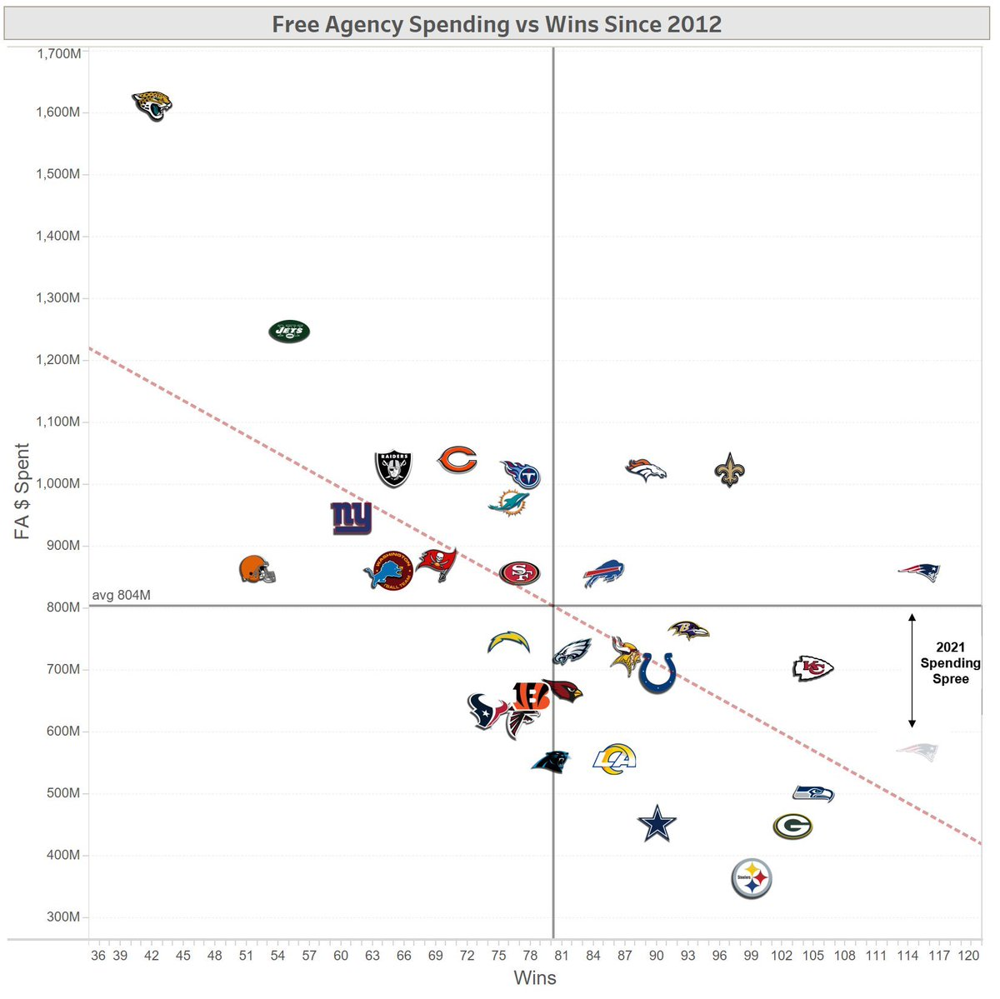
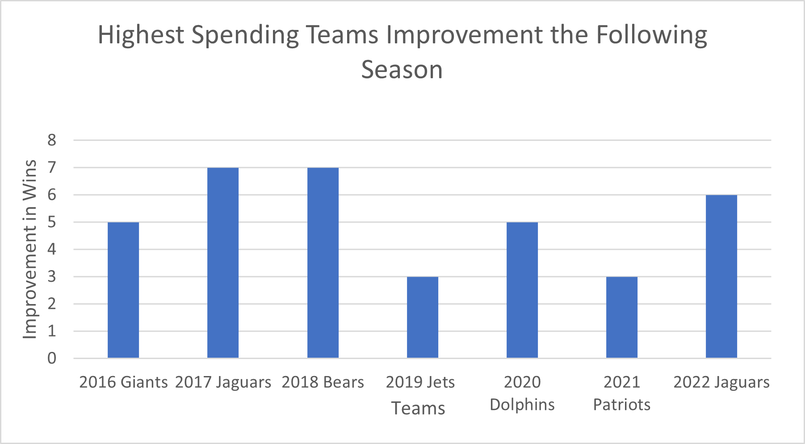
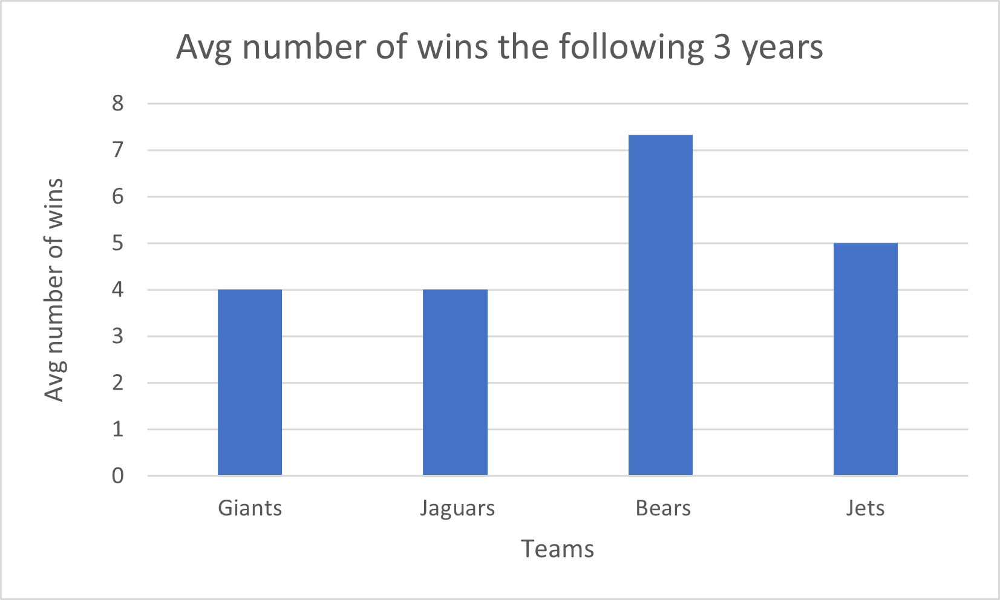

Does Money Equal Wins in the NFL?
By Aakash Adhia | April 16, 2023

Another great NFL season has just come to an end, which means that we are entering into a brand new NFL offseason and free agency is just around the corner. The Chiefs winning their 2nd superbowl in 4 years is in the rearview mirror and NFL teams are now gearing up to upgrade their teams to knock the defending champs off their throne next season. Free agency is a crucial part of the NFL offseason as teams have an opportunity to address key positions of need and take chances on players who didn’t work out with their teams due to contract disputes or declining skills. We’ve seen teams like the Bucs (Brady, Gronk, AB) go all in free agency and win Super Bowls and teams like the Eagles (AJ Brown, Reddick, Bradberry) retool their rosters to make massive turnarounds. Even the Chiefs made a lot of moves in free agency to replace departures like Tyreek Hill and Tyrann Mathieu (Juju, MVS, Justin Reid) . But, we’ve also seen teams like the Raiders make major splashes last offseason (Davante Adams and Chandler Jones) only to completely underachieve this past season.
The main part that I’m going to be investigating is whether spending more money in free agency leads to more wins the following season and in the long-term or is being more frugal in free agency and building through the draft better. Teams like the Bears have a ton of cap space this offseason(over 90 million) , so there has been more discussion on whether they should spend more money or spend frugally and use the draft to their advantage. Also, I am going to observe patterns where teams have prioritized their cap space to see what reasons there could be for staying stagnant after spending big or sustaining success.
The graphic below shows each NFL team’s total money spent since 2012 and how they’ve correlated to wins over the last 10 years. The teams that have spent the most money like the Jaguars, Jets , Bears, and majority of other teams that have spent more money than the average all have won less than 80 games since 2012. The Jaguars have spent a staggering amount of money in free agency(1,600M) and have the least amount of wins out of all the teams. The teams that have the most wins like the Patriots, Chiefs, Packers, and Seahawks are below the average spending line for all the teams. This shows that in the long-term, spending more money on free agents won’t lead to sustained success.
But, over the last 7 years, teams that have spent the most money in free agency have seen significant jumps in their records the following year. The most recent example is last year’s Jaguars, who finished 3-14 in 2021 and spent over $100 million in free agency. They improved to a 9-8 record this year and won a playoff game before losing to the eventual Super Bowl champions Kansas City Chiefs in the Divisional Round. Here is a table with the jump in win totals for each team that spent the most in free agency over the last 7 years:
This is how these teams finished their seasons:
- 2016 Giants: 11-5, Wildcard loss
- 2017 Jaguars: 10-6, AFC Championship game loss
- 2018 Bears: 12-4, Wildcard loss
- 2019 Jets: 7-9, missed playoffs
- 2020 Dolphins: 10-6, missed playoffs
- 2021 Patriots: 10-7, Wildcard loss
- 2022 Jaguars: 9-8, Divisional round loss
A lot of these teams spent well over 100 million dollars in free agency, and some of these teams like the Bears, Jaguars, and Giants made the playoffs, and the 2017 Jaguars were on the precipice of the Super Bowl. But, there also have been cases where teams have gotten worse in the short term by spending so much money on free agency. Free agency can be a volatile process and there has been evidence of teams falling off considerably after their one good season post free agency spending or just failing entirely. The 2011 Eagles Dream team was the perfect example of this. They were called the Dream Team only for them to finish 8-8 the next year. They threw out around 130 million dollars at 9 notable free agents. Here is a table of the money they threw at each free agent. They had reserved cap space the previous 2 years to go all in as they were coming off a 10-6 season with Michael Vick the previous year and an NFC East division title. 10 Pro bowlers and 25 combined pro bowl appearances were on that 2011 team just for them to flame out.

Some of the teams that are in the bar chart as well above had really good seasons the next year, but they were one-season wonders as they faded over the next few seasons. Here is a graph showing the Giants, Bears, Jaguars, and Jets average number of wins the following 3 years after their one season of big improvement.
In conclusion, I believe that teams should build through the draft and use free agency as a way to add players that teams believe are the cherry on top to their well-built team, not the basis of building their team. The two teams in the superbowl this past year, the Chiefs and the Eagles, built their teams through the draft primarily and used free agency to get the pieces to take them over the top. For example, the Chiefs were able to spend money on the offensive line the past two years in free agency(over 100 million in total on players like Orlando Brown and Joe Thuney) , spend money on receivers to replace Tyreek Hill (Juju, MVS) , and on defensive backs(Justin Reid) because they have Mahomes at quarterback and blue-chip players that they have drafted like Travis Kelce and Chris Jones. The Eagles drafted every single player on their Super Bowl offense outside of AJ Brown, so they spent over 60 million on the defense last offseason on players like Haason Reddick and James Bradberry. Otherwise, long-term success won’t be sustained and a lot of teams will end up like the 2016 Giants, 2017 Jaguars, and 2018 Bears, which were teams that had success in the short-term but crashed quickly long-term.
Also, I observed that teams that have quarterbacks on their rookie contracts tend to spend more in free agency because they can afford to build around that quarterback. The 2017 Jaguars, 2018 Bears, and other teams in the bar chart all had quarterbacks on rookie contracts. Even successful teams like the Chiefs spent money while Mahomes was on a dirt-cheap contract. If their quarterback is elite, their free agent signings on either side of the football can help the team compete, or they can still be relevant even if they make mistakes. Those teams also tend to gear their free agent signings more towards the offense like the Bills did with Josh Allen since they needed offensive help. They signed veteran receivers(Josh Brown, Cole Beasley, traded for Diggs) and o-line pieces to help him take a leap in 2020. They spent around 95% of their free agent money in 2019 on the offense.
But, a lot of these teams that spent big money in free agency and failed long-term spent money on the defensive side of the ball, and that is a risky proposition, especially if the offense is not built well. If the quarterback these teams built their team around doesn’t pan out(Bears with Trubisky, Jaguars with Bortles, Jets with Sam Darnold), they can suffer for years to come with dead cap charges flooding their salary cap in the long-term. The Giants in 2016 and the Jaguars in 2017 spent over 90% of their free agent money on the defense. That is a staggering amount of money to spend on that side of the ball without a stable quarterback room, and it ultimately destroyed their teams going forward. Majority of those star defensive players they paid ended up leaving the team 2-3 years later. It takes time for a team to dig themselves out of such a hole, and teams like the Bears and Jaguars had to suffer through turmoil filled seasons until they both lucked into promising young quarterbacks in Lawrence and Fields that may give these two teams some hope for the future.